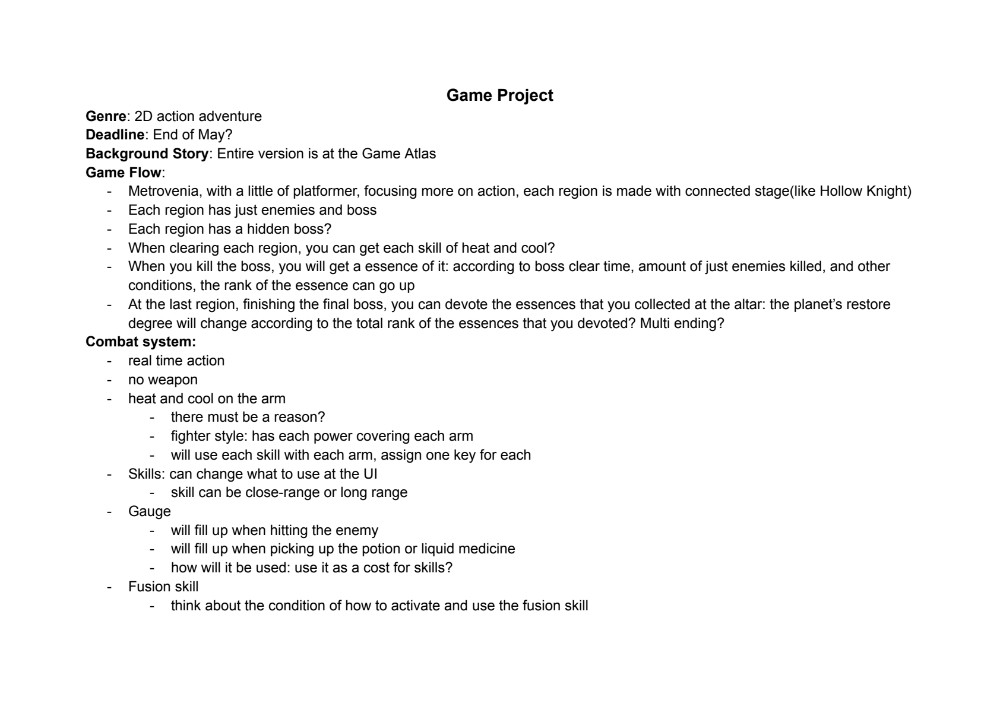
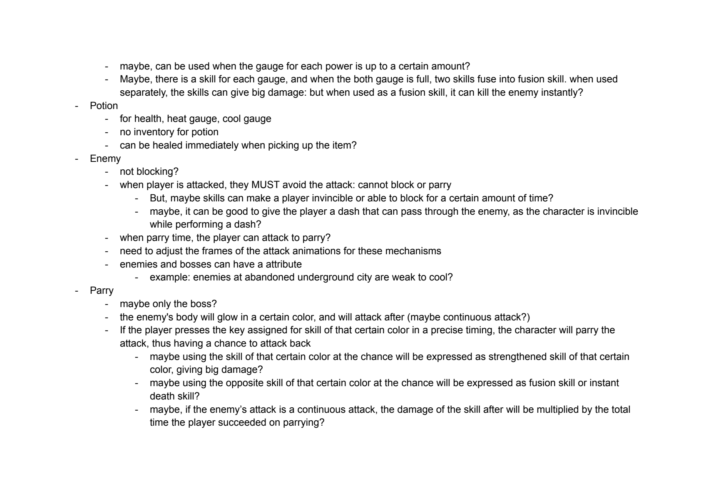
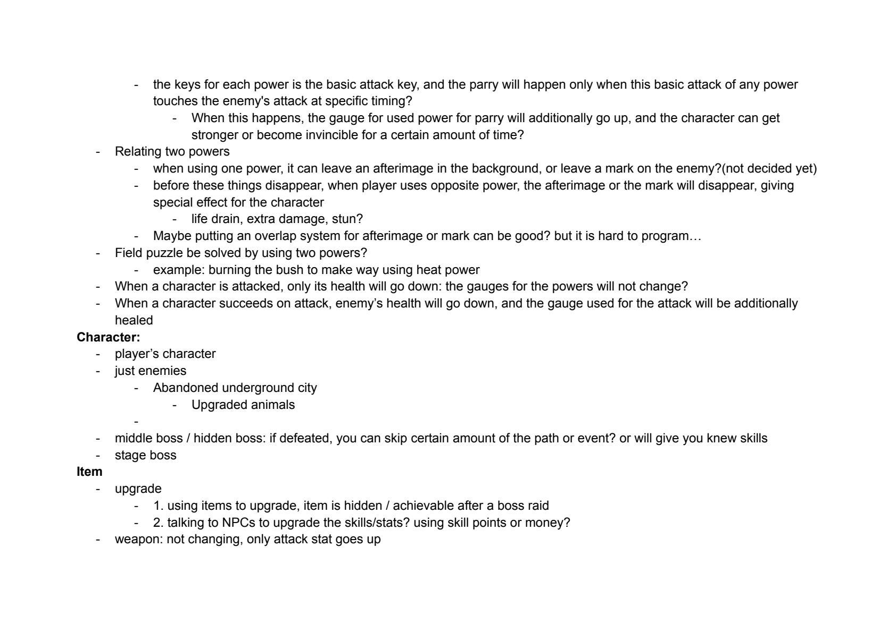
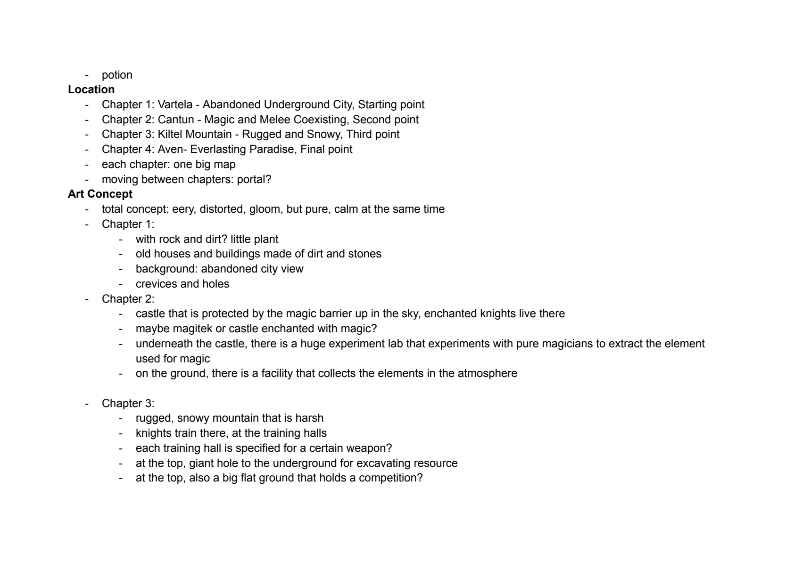
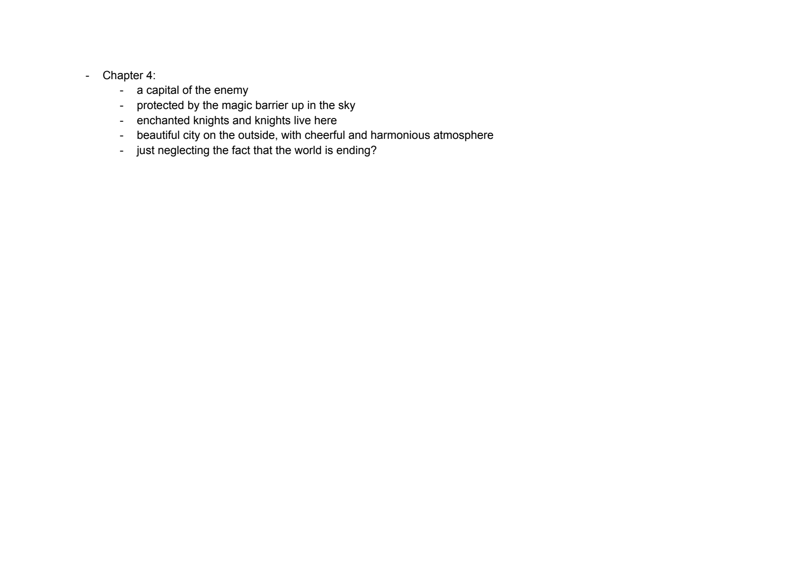

Ambidexter: Game Design Document
Page 1 of 5

Read page text
Game Project Genre: 2D action adventure Deadline: End of May? Background Story: Entire version is at the Game Atlas Game Flow: - Metrovenia, with a little of platformer, focusing more on action, each region is made with connected stage(like Hollow Knight) - Each region has just enemies and boss - Each region has a hidden boss? - When clearing each region, you can get each skill of heat and cool? - When you kill the boss, you will get a essence of it: according to boss clear time, amount of just enemies killed, and other conditions, the rank of the essence can go up - At the last region, finishing the final boss, you can devote the essences that you collected at the altar: the planet’s restore degree will change according to the total rank of the essences that you devoted? Multi ending? Combat system: - real time action - no weapon - heat and cool on the arm - there must be a reason? - fighter style: has each power covering each arm - will use each skill with each arm, assign one key for each - Skills: can change what to use at the UI - skill can be close-range or long range - Gauge - will fill up when hitting the enemy - will fill up when picking up the potion or liquid medicine - how will it be used: use it as a cost for skills? - Fusion skill - think about the condition of how to activate and use the fusion skill
Page 2 of 5

Read page text
- maybe, can be used when the gauge for each power is up to a certain amount? - Maybe, there is a skill for each gauge, and when the both gauge is full, two skills fuse into fusion skill. when used separately, the skills can give big damage: but when used as a fusion skill, it can kill the enemy instantly? - Potion - for health, heat gauge, cool gauge - no inventory for potion - can be healed immediately when picking up the item? - Enemy - not blocking? - when player is attacked, they MUST avoid the attack: cannot block or parry - But, maybe skills can make a player invincible or able to block for a certain amount of time? - maybe, it can be good to give the player a dash that can pass through the enemy, as the character is invincible while performing a dash? - when parry time, the player can attack to parry? - need to adjust the frames of the attack animations for these mechanisms - enemies and bosses can have a attribute - example: enemies at abandoned underground city are weak to cool? - Parry - maybe only the boss? - the enemy's body will glow in a certain color, and will attack after (maybe continuous attack?) - If the player presses the key assigned for skill of that certain color in a precise timing, the character will parry the attack, thus having a chance to attack back - maybe using the skill of that certain color at the chance will be expressed as strengthened skill of that certain color, giving big damage? - maybe using the opposite skill of that certain color at the chance will be expressed as fusion skill or instant death skill? - maybe, if the enemy’s attack is a continuous attack, the damage of the skill after will be multiplied by the total time the player succeeded on parrying?
Page 3 of 5

Read page text
- the keys for each power is the basic attack key, and the parry will happen only when this basic attack of any power touches the enemy's attack at specific timing? - When this happens, the gauge for used power for parry will additionally go up, and the character can get stronger or become invincible for a certain amount of time? - Relating two powers - when using one power, it can leave an afterimage in the background, or leave a mark on the enemy?(not decided yet) - before these things disappear, when player uses opposite power, the afterimage or the mark will disappear, giving special effect for the character - life drain, extra damage, stun? - Maybe putting an overlap system for afterimage or mark can be good? but it is hard to program… - Field puzzle be solved by using two powers? - example: burning the bush to make way using heat power - When a character is attacked, only its health will go down: the gauges for the powers will not change? - When a character succeeds on attack, enemy’s health will go down, and the gauge used for the attack will be additionally healed Character: - player’s character - just enemies - Abandoned underground city - Upgraded animals - - middle boss / hidden boss: if defeated, you can skip certain amount of the path or event? or will give you knew skills - stage boss Item - upgrade - 1. using items to upgrade, item is hidden / achievable after a boss raid - 2. talking to NPCs to upgrade the skills/stats? using skill points or money? - weapon: not changing, only attack stat goes up
Page 4 of 5

Read page text
- potion Location - Chapter 1: Vartela - Abandoned Underground City, Starting point - Chapter 2: Cantun - Magic and Melee Coexisting, Second point - Chapter 3: Kiltel Mountain - Rugged and Snowy, Third point - Chapter 4: Aven- Everlasting Paradise, Final point - each chapter: one big map - moving between chapters: portal? Art Concept - total concept: eery, distorted, gloom, but pure, calm at the same time - Chapter 1: - with rock and dirt? little plant - old houses and buildings made of dirt and stones - background: abandoned city view - crevices and holes - Chapter 2: - castle that is protected by the magic barrier up in the sky, enchanted knights live there - maybe magitek or castle enchanted with magic? - underneath the castle, there is a huge experiment lab that experiments with pure magicians to extract the element used for magic - on the ground, there is a facility that collects the elements in the atmosphere - Chapter 3: - rugged, snowy mountain that is harsh - knights train there, at the training halls - each training hall is specified for a certain weapon? - at the top, giant hole to the underground for excavating resource - at the top, also a big flat ground that holds a competition?
Page 5 of 5

Read page text
- Chapter 4: - a capital of the enemy - protected by the magic barrier up in the sky - enchanted knights and knights live here - beautiful city on the outside, with cheerful and harmonious atmosphere - just neglecting the fact that the world is ending?